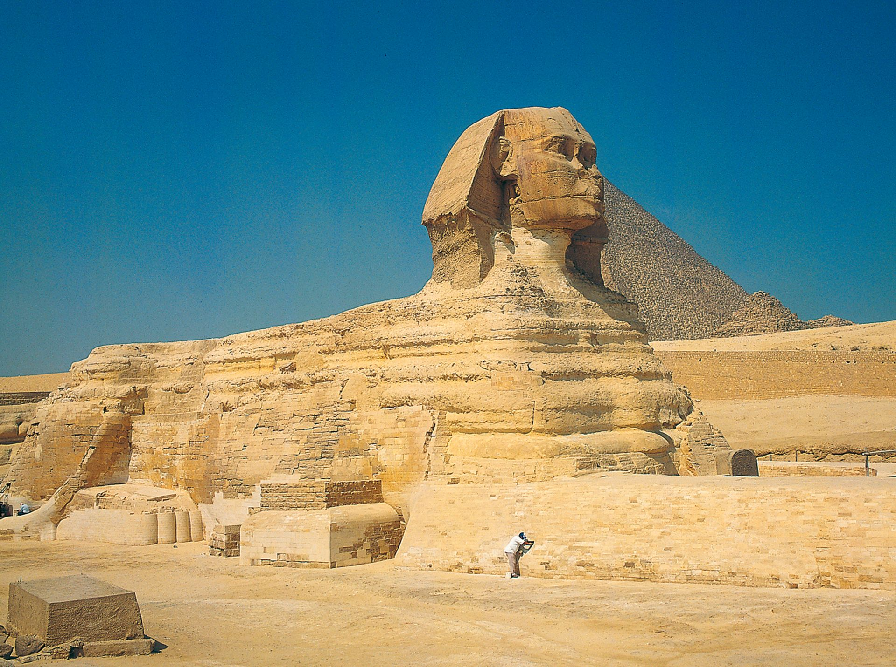

Abu Simbel

Ramesses II left his legacy, Abu Simbel, on the banks of the Nile River more than 1,200 years BC. Abu Simbel consists of two temples, Great and Small, that are carved into a cliff.
Many historians believe Abu Simbel was built to celebrate Ramesses’ 1274 BC victory over the Hittites. Others think it was built after his 1244 BC victory over the Nubians.
Scholars agree it took 20 years to build. The Great Temple is dedicated to Ramesses II and various gods while the Small Temple is dedicated to his favorite wife, Nefertari. Abu Simbel was named in 1813 for the youngster who took an explorer there.
Citadel Of Qaitbay

Qaitbay citadel has an interesting history that links it to the unique Lighthouse of Alexandria. So let’s take some time to speak about this mesmerizing lighthouse. The Lighthouse was considered to be one of the seven wonders of the world and it kept having its function until the Arab Conquest in addition to other natural disasters, which changed the shape of the lighthouse.
An earthquake occurred in the 11th century and its octagonal part was damaged. They built a mosque on the top of the lighthouse but another earthquake happened that destroyed the whole building.
The Circassian Mameluke Sultan Al-Ashraf Qaitbay was one of the most prominent mameluk sultans ruling for about 29 years. He decided to build the citadel to defend the place against the Turks, who were threatening Egypt at that time. He built his great fortress and placed a mosque inside and the citadel continued to function during the Mameluke and the Ottoman periods but it was kept out of the spotlight in 1882 after the British Bombardment of Alexandria city.
Colossi Of Memnon

If you like ancient things, you’ll find them at 3,400-year-old Colossi of Memnon across the Nile River from Luxor. When it was built by Amenhotep III, it was the most opulent and largest temple complex in Erupt, surpassing even Karnak Temple.
Designed as a memorial to Amenhotep, it was named after Ethiopian King Memnon, a Trojan War hero. The Colossi of Memnon consists of two large statues of Amenhotep looking at the Nile and the sun.
Smaller statues in front of his throne represent his wife and mother. All statues are made from quartzite sandstone. The Colossi of Memnon are in ruins today, but are still impressive landmarks.
Colossi Of Memnon
If you like ancient things, you’ll find them at 3,400-year-old Colossi of Memnon across the Nile River from Luxor. When it was built by Amenhotep III, it was the most opulent and largest temple complex in Erupt, surpassing even Karnak Temple.
Designed as a memorial to Amenhotep, it was named after Ethiopian King Memnon, a Trojan War hero. The Colossi of Memnon consists of two large statues of Amenhotep looking at the Nile and the sun.
Smaller statues in front of his throne represent his wife and mother. All statues are made from quartzite sandstone. The Colossi of Memnon are in ruins today, but are still impressive landmarks.
The Karnak Temple

The name Karnak Temple may be a misnomer since it’s really a city of temples within one complex. Construction started around 2000 BC and eventually resulted in the largest religious building ever built. The detail the ancient Egyptians created in this complex is simply amazing.
The main hall, Hypostyle, features 134 carved columns, and is the largest single religious room in the world. Dedicated to several Egyptian gods, the complex has several smaller temples and a sacred lake that was surrounded by the priests’ living quarters and an aviary.
Karnak Temple was a pilgrimage destination for 2,000 years. The temple is in ruins now, but its former greatness still shines through.
The Pyramids Of Giza

The Giza Pyramids, built to endure an eternity, have done just that. The monumental tombs are relics of Egypt's Old Kingdom era and were constructed some 4,500 years ago.
Egypt's pharaohs expected to become gods in the afterlife. To prepare for the next world they erected temples to the gods and massive pyramid tombs for themselves—filled with all the things each ruler would need to guide and sustain himself in the next world.
Pharaoh Khufu began the first Giza pyramid project, circa 2550 B.C. His Great Pyramid is the largest in Giza and towers some 481 feet (147 meters) above the plateau. Its estimated 2.3 million stone blocks each weigh an average of 2.5 to 15 tons.
Khufu's son, Pharaoh Khafre, built the second pyramid at Giza, circa 2520 B.C. His necropolis also included the Sphinx, a mysterious limestone monument with the body of a lion and a pharaoh's head. The Sphinx may stand sentinel for the pharaoh's entire tomb complex.
The third of the Giza Pyramids is considerably smaller than the first two. Built by Pharaoh Menkaure circa 2490 B.C., it featured a much more complex mortuary temple.
The Great Sphinx

Who built the Great Sphinx of Giza? No one can say for sure (though several of the more crazy theories point fingers at space aliens).
The huge limestone statue, as tall as the White House in Washington, D.C., with paws bigger than city buses, was erected in the time of the Old Kingdom, probably during the reign of the Pharaoh Khafre, between the years 2558 and 2532 B.C.
The crouching lion with a man’s head was ancient when Cleopatra gazed upon it in 47 B.C. It retains its allure to the powerful, as world leaders from Napoleon to Barack Obama have trekked to Giza to contemplate the same view that captivated the queen of the Nile.